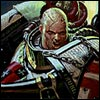

Forums galactiques > Assemblée Galactique : diplomatie officielle > attaque de mon systeme
Pages : 1
| Sigismund Respect diplomatique : 13  09/06 ETU 23:52 | Score : 3 Détails Voilà chers commandants le sujet de ma requète, est il normal dans notre chère démocratie qu' un puissant commandant s' en prenne à un faible. Sans autres raison évidentes que de le détruire.
En effet j' ai recu 2 comptes rendu d' invasion du commandant génésis, il semble vouloir envahir tout le système 277. Je ne peu hellas rien faire avec mes maigres 50 croiseurs légers face à ses 510 frégates. J' ai donc pensé, au vue de cette attaque illégale, de développer l' hyperfusion pour qu' ainsi les forces du gouvernement viennent m' aider. J' espère que vous comprenez ma situation. En attendant une réponse rapide. Amicalement, | ||
| Gaston Lagaffe Respect diplomatique : 401  09/06 ETU 23:57 | Score : 2 Détails Aye aye aye, encore ce problème récurrent.
Avez vous utilisé la voix diplomatique avant de venir sur cette assemblée? | ||
| Angelus L Oméga Respect diplomatique : 1305  09/06 ETU 23:58 | Score : 1 Détails Etant apparus tout deux dans le même système, vous devriez être d’une puissance assez identiques à votre voisin.
Toutefois, cela ne justifie absolument pas une mise à mort, le système natal appartient à tous ceux qui y sont « nés ». Je vous invite donc à m’expliquer en détail la situation par MP, pour tenter une résolution diplomatique, et ainsi arriver à un compromis pour le partage équitable du système. | ||
| Mahal Respect diplomatique : 65  10/06 ETU 00:01 | Score : 1 Détails Le sénat étant encore tout frais sorti de son oeuf, il serais peut-être préférable pour vous de vous allier avec un commandant...
Je peut me proposer pour cette tache si vous le souhaitez, mais je vous prévient que je laisserais alors 48h a votre envahisseur pour se rabattre sur ses possessions avant d'attaquer inconsidérément... Mais je vous conseillerais d'autres commandant plus aptes que moi, Angelus L Omega en est un (de plus membre du sénat) | ||
| Revan82 Respect diplomatique : 545  10/06 ETU 00:11  | Score : 0 Détails L'important dans ces affaires est de privilegier au maximum la diplomatie et de lui demander gentiment de se calmer dans ses conquêtes abusives.
Je pense qu'un avertissement devrait suffir à rétablir la situation, et si ce n'est pas le cas employer d'autres methodes, mais pas forcement la violence, juste une présence dissuasive. Donc il faut garder son calme face à ces actes immoraux. Merci de m'avoir écouté!!! _________________________ Revan, commerçant de la guilde!!! | ||
| GéNéSiS Respect diplomatique : 86  10/06 ETU 23:01 | Score : 5 Détails NON MAISIL NE FAUT PAS EXAGERER NON PLUS!!!!!!
Je n'ai JAMAIS entendez vous , JAMAIS , attaqué ce commandant !!!! Mais pour qui se prends t'il a venir crasher de telle calmonie sur l'assemblé ?!?!? De plus je demande qu'il avance les preuves de ses dires (les compte rendu de l'invasion de ses planétes)!!! preuve que je suis sur qu'il en soit dépourcu car moi j'ai les compte rendu d'invasion sur LES PLANETES NEUTRES !!!! Et pour légitimé son message il me dit qu'il ne puis pas se déveloper normalement avec ses deux planétes...... je voulais parvenir a un accord avec lui en voyant le MP qu'il m'a adresser aujourdhui mais je me demande si je ne devrai pas le punir pour ce mensonge héhonter a l'encontre de moi , commandant honorable dans une galaxie neuve. | ||
| Vincenzo Rimi Respect diplomatique : 362  11/06 ETU 11:34 | Score : 0 Détails J'aimerai connaitre tous les comptes rendus d'invasion avant de me prononcer.
Sans cela on tourne en rond. | ||
| GéNéSiS Respect diplomatique : 86 11/06 ETU 23:05 | Score : 1 Détails eh bien voici mes compte rendu sur toute les planétes que sigismund m'accuse d'avoir prise (et voici aussi le MP) :
Expéditeur Sigismund Destinataire GéNéSiS Date d'envoi 10/06 ETU 11:21 Sujet invasion Message Auriez vous l obligeance de me rendre mes planetes que vous m' avez envahie? Le gourvenement et d' autre commandant vertueu seront contrain de venir vous chassez si vous n' accepter pas de me rendre les planetes fagh\\\\\\\'n,Alundra,etmalastar amicalement, Avertir les administrateurs du contenu de ce message Répondre Supprimer ce message vu son ton cordial je lui ai assurement repondu aussi cordialement que possible. Maintenant voici que j'ai decouvert ce sujet !!!! et voici les compte rendu d'invasion sur les planétes susnommé: Réussite de votre mission d'invasion. Vous avez envoyé une flotte de 10 unités militaires à l'assaut de la planète « fagh\\\\\\\'n » (anciennement fagh\\\'n) (système 277), possédée au moment de l'invasion par personne. Votre tentative d'attaquer par surprise a lamentablement échoué. La défense ennemie s'est organisée merveilleusement. Les défenses ennemies vous ont infligé de lourdes pertes : 5 unités n'ont pas pu être sauvées, à savoir : - 5 frégate(s) de combat Les défenses planétaires ont elles aussi subi des pertes. Retour à la liste Réussite magistrale de votre mission d'invasion. Vous avez envoyé une flotte de 10 unités militaires à l'assaut de la planète « Alundra » (système 277), possédée au moment de l'invasion par personne. Votre tentative d'attaquer par surprise a été insuffisante. La défense ennemie s'est organisée lamentablement. Les défenses ennemies vous ont infligé de lourdes pertes : 3 unités n'ont pas pu être sauvées, à savoir : - 3 frégate(s) de combat Les défenses planétaires ont elles aussi subi des pertes importantes. Retour à la liste et pour la derniére planéte le bougre la possédait encore et prétendais que je l'avais !!! EDIT : en plus je viens de faire une découverte interressante !!!! non content de m'accusez il a essayer de m'envahir ses planéte fraichement capturé (je sais c'est peux etre qu'il a lancé son ordres moins de 24 heures apres...) : Avis d'invasion. Résistance d'une planète Vous avez subi une invasion de la part du commandant « Sigismund » sur votre planète « Alundra » (système 277). La tentative ennemie d'attaquer par surprise a partiellement réussi. Votre défense s'est organisée correctement. Vos défenses ont infligé des pertes à l'ennemi, qui a perdu 29 unités. Votre flotte n'a pas été touchée. Nos défenses planétaires n'ont pas été touchées. Retour à la liste Avis d'invasion. Résistance d'une planète Vous avez subi une invasion de la part du commandant « Sigismund » sur votre planète « fagh\\\\\\\'n » (système 277). La tentative ennemie d'attaquer par surprise a bien réussi. Votre défense s'est organisée plutôt mal. Vos défenses ont infligé des pertes à l'ennemi, qui a perdu 44 unités. Votre flotte présente à côté de la planète est intervenue. Elle a perdu 5 unités, à savoir : - 5 frégate(s) de combat Nos défenses planétaires n'ont pas été touchées. Retour à la liste voila je puis vous assurez n'avoir falsifié aucun document donc je dispose. | ||
| bartarengis Respect diplomatique : 20  12/06 ETU 07:26 | Score : 0 Détails Le commandant bartarengis se leva et parla d'une voie roque mais bizare.
Il vous s'attaque pourquoi?si vous ne lui donné que 2 planétes sur 20!je dit que c'est normal. Le commandant bartarengis se rassit pour attendre les commentaires de ses confrères. | ||
| El Rey Respect diplomatique : 6  12/06 ETU 13:08 | Score : 1 Détails Le commandant El Rey rentra dans la salle pour intervenir face au problème de bartarengis:
-Commandant bartarengis je viens ici pour vous dire que votre manière de penser est bizarre .Dans mon système qui est le votre ainsi qu'a Alien vous faites n’importe quoi. Au début quand on a commencé tout les trois on avais dit que l'on faisait un partage équitable des planete maintenant je n'ai presque plus de planètes par la faute de qui?????De la votre bien sur vous m'attaqué tout les plante je me suis retrouvé avec une planètes la dernière fois .Je suis obligé de demander de l'aide a des commandants car tout seul je n'arrive pas a résister face a vous. Quand je vous demande pourquoi vous m'attaquez vous me répondez:"parce que tu me gêne pour mon développement" vous trouvez cela normale vous????Désolé mais pas moi quand on dit quelque chose on le maintient moi si je fais un pacte je le respecte contrairement a vous. Alors voila j'ai terminais mon intervention je vous laisse. El rey. | ||
| Chil powo Respect diplomatique : 406  12/06 ETU 14:59 | Score : 0 Détails En tant que médiateur, je propose au autres de membre du bureau de médiation de prendre en main
cette affaire ! Le commandant Chil Powo se levât et rejoignit Sigismund. Pendant le trajet de sa place vers le commandant qu'il voulait voir, il fit signe à GéNéSiS de bien vouloir les rejoindre. Il proposa à chacun de pouvsvuire cette discutions dans le Bureau de médiation mis en place pour ce genre d'affaire ! Puis il demanda sur un ton très calme ; Commandant Sigismud, j'aimerais que vous certifiez sur votre honneur que vous ne considériez pas ces planète comme votre parce que sur votre point de coordonnée natale ! Commandant GéNéSiS, je ne doute absolument pas de votre bonne foie, mais avant de vous énerver, concevez tout de même que j'écoute le commandant Sigismud et se qu'il à a dire ! Les preuves que GéNéSiS a avancer son normalement suffisantes mais j'aimerais bien que se soit dans un face à face et non pas dans un exposé de rapport que cette histoire se règle ! |
Pages : 1
Forums galactiques > Assemblée Galactique : diplomatie officielle > attaque de mon systeme